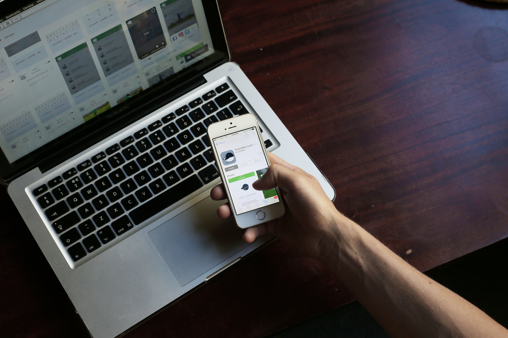

⛳️ ProGolfMe
product designer - 1yr
Introduction
ProGolfMe is an app that connects golf coaches with golf players where the players can pay for in-app lessons and performance feedback.
The player sends a video of their swing to a coach of their choice, then the coach can chat with the player and they can exchange footage from anywhere at anytime. Simple right..!?

Problem
ProGolfMe required an MVP (minimal viable product) within 3 months and wanted to be capable of generating revenue within 6 months.
At this stage ProGolfMe had no branding and no screen designs, just a logo.
Communicating to the user what needed to be done in the app was evidently going to be a challenge.
Research
Using their existing logo, I generated two colour palettes and logo variations. In order to test them I contacted hundreds of golfers via a popular golf forum (thesandtrap.com) and simply held a poll for logo variations and the colours used in the screens.
Conversations with golf coaches revealed that they also wanted access via an app because it was easier to take and send videos.
Testing
Early prototypes were tested on anyone to find immediate issues, we quickly realised a need to test on actual golfers due to the nature of terminology used e.g. handicap.

Visits to the local golf club to test prototypes revealed a lack of clarity and disjointed user flows.
At this stage I suggested it would be beneficial to do our work at the golf club to test more frequently with a fail fast approach, this strategy was approved and consequently we gained deeper insights.
Design

I developed the company branding and with it a cohesive style guide.

I drafted detailed wireframes to achieve a polished product ready for release.

I developed a simple flow that was intuitive and provided a far higher success rate for all age brackets compared with the MVP.
The coaches had also demanded an app experience, therefore I was able to strategically design the app to share assets and app architecture. I made the primary colour different so that it was obvious which app you were using.
Cognitive load was reduced by simplifying the navigation to three categories, profile, chat and browse coaches.
I covered the whole app experience from sign-up to payment.
Meticulous design communication between myself and app developers in Ukraine was critical for the successful launch of the app.
Result
Our MVP was in the App Store on target.
By 5 months we had people using the app due to its improved architecture and user flows.
Take-away
I learned how to play golf! üèå
I learned that how one approaches user testing directly affects the quality of the insights obtained.
If I were to do it again, I would not just copy best practices but take the time to fully understand why they work in order to apply them with more meaning.
Testimony
Joe was a credit to the successful development of our product. He listened to our needs and shared creative ideas and opportunities that evolved into crucial components of our app. He is a team player that understands the limitations in programming and business decisions yet always finds a work around with techniques such as user testing or product research. If you're trying to build a software product that your users love, Joe will certainly help you get there and probably save you money to boot.
Brendan (Founder)
Other work

Dive-Computer UI
They said design an interface for when you are 100ft below the sea... no pressure.
Learn more
Timely